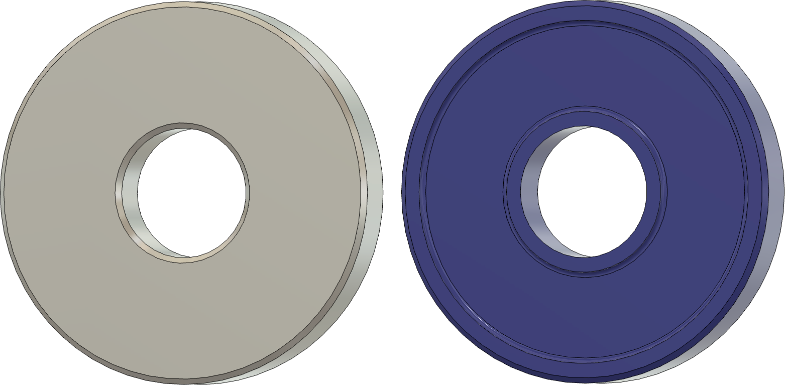

|
|
|
Grindstone Washer |

Grindstone Washers - Original vs. Revised
I made this replacement washer to be used between the body of the Tormek and the grinding stone, replacing the one which comes with the machine. The goal of it is to help keep this part from coming off with the grinding stone when the grinding stone is removed.
The 3D-printed part has a dishing of 0.5mm. This reduces the surface adhesion between the grindingstone and the washer significantly. (The surface area of the 3D-printed part is 78% less than the one supplied with the machine.)
Additionally, the hole for the spindle makes it fit tightly onto the spindle, helping it not come off when the grinding wheel is removed.
I asked Claude.ai,
Capillary adhesion is experienced between the grindstone and the washer on a Tormek grinder. If the washer had most of the surface dished out (as if it were a bowl), would this surface adhesion become almost negligible?
The response was,
Yes, and quite significantly — for two separate reasons tied to the two mechanisms:
Capillary suction (Laplace pressure)
This force is roughly proportional to the contact area where the thin film exists. Dish out the center and that area shrinks to just the outer rim, so the suction force drops proportionally to how much area you've removed.
Stefan (viscous squeeze-film) adhesion
This is the bigger effect for a fast pull-apart, and it's the one that benefits most dramatically. The Stefan equation says resistance scales with the fourth power of the radial distance water has to travel to escape: \[ \begin{align} F \propto \frac {R^4}{h^3} \\ \end{align} \]
That R4 term exists because water at the center of a flat disk has to travel the full radius outward to escape when the plates squeeze together — a long, slow path. If you dish out the center, that water is sitting in an open reservoir with nowhere to build pressure — it's not trapped. Only the water in the thin rim band actually gets squeezed, and it only has to travel the width of that rim (not the full radius) to escape. Since the effective flow-path length drops so much, and the force depends on that length to the 4th power, the reduction is dramatic — often far more than proportional to the area removed.
Net effect: You wouldn't make it perfectly zero — there's still a wetted rim doing some work — but you'd cut both the suction and (especially) the "stuck fast" viscous resistance dramatically. This is essentially why things like vacuum-cup release valves, dimpled/grooved plates, and relief channels are common tricks for beating stiction — you're shortening the escape path for the trapped film rather than trying to eliminate the film itself.
|
Part |
STL File |
|---|---|
| Jig | GrindstoneWasher.stl |
The 3D printing file is available as an STL. I found that ABS worked acceptably for printing this.